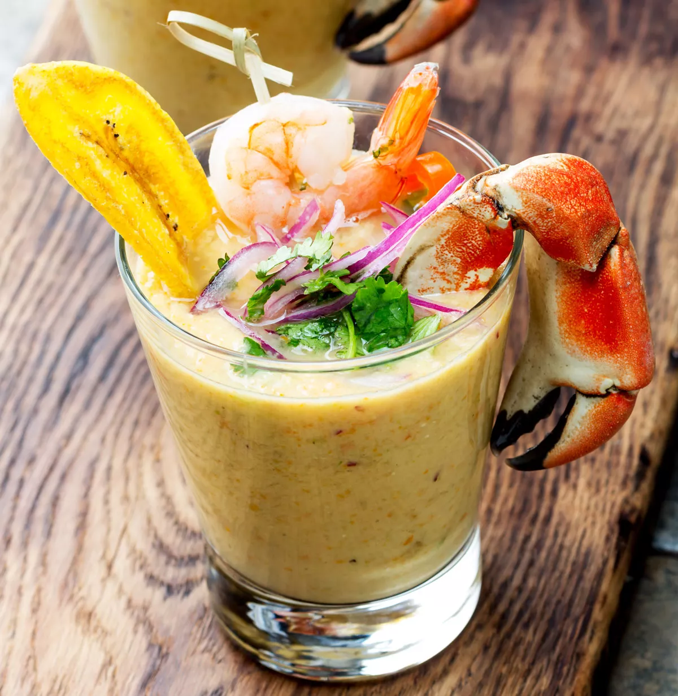

Home
Leche de Tígre ("Tiger's Milk")

Ingredients
- 2 cups fresh lime juice
- 5 oz firm white fish (like seabass or sole)
- 1 cup fish stock
- ½ large yellow onion, thinly sliced
- 3 garlic cloves, thinly sliced
- 2 celery ribs, chopped
- 2 tbsp grated fresh ginger
- 2 tsp chopped cilantro stems
- 1 tsp ají limo paste (or substitute with a small amount of habanero paste)
- 2½ tsp kosher sal
- ⅔ cup cold water
- ⅓ cup ice cubes
Instructions
- Place a fine mesh strainer over a large bowl or measuring cup.
- In a high-powered blender, combine the lime juice, fish, fish stock, onion, garlic, celery,
ginger, cilantro stems, ají limo paste, and cold water. Blend until completely liquefied,
about 5 minutes.
- Add the salt and ice cubes to the blender, then blend again until thoroughly combined, 30–60 seconds more.
- Strain the mixture through the prepared sieve, reserving the liquid and discarding any solids.
- Cover and refrigerate the leche de tigre until ready to use, up to 1 day, or freeze for up to one month.
This vibrant citrus-based marinade is traditionally used to cure fish in Peruvian ceviche.
Leftovers can be frozen for up to a month to be repurposed in more ceviche, marinades, or
even in savory drinks, like the "Hair of the Tiger" cocktail. You may add a slice of green fried
plantain, cocktail shrimp, red onions or even a crab leg for garnish.